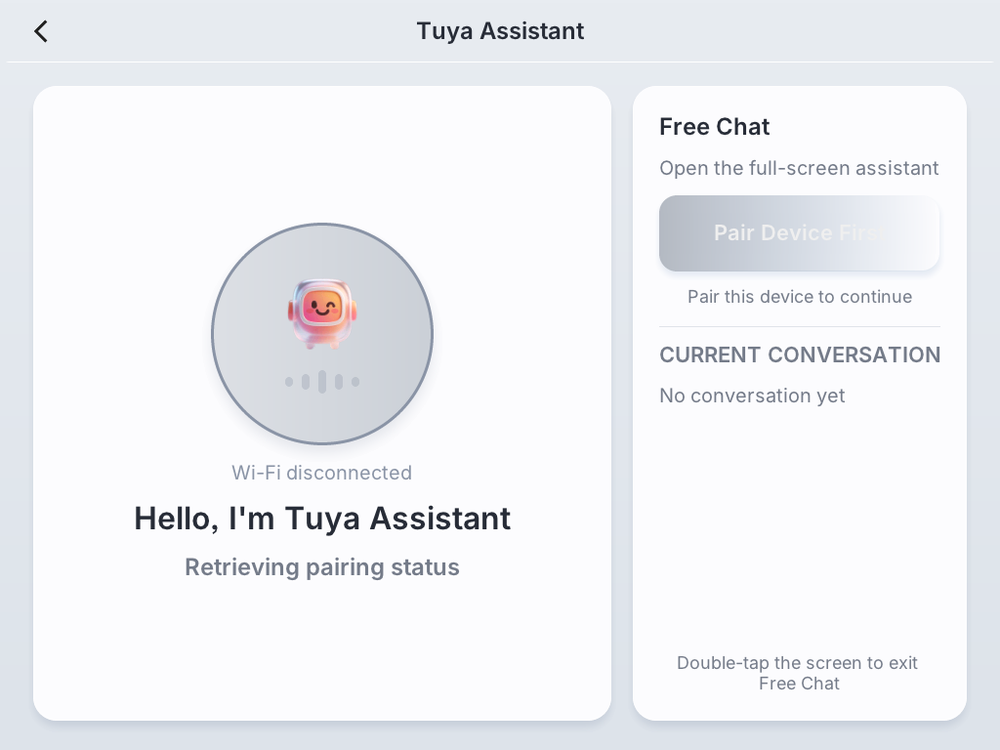
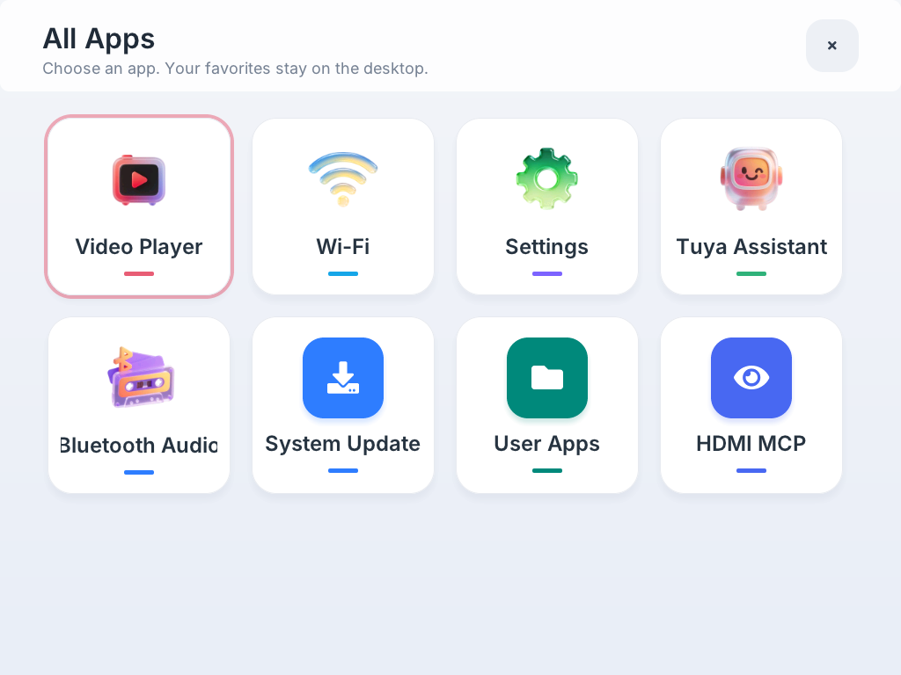
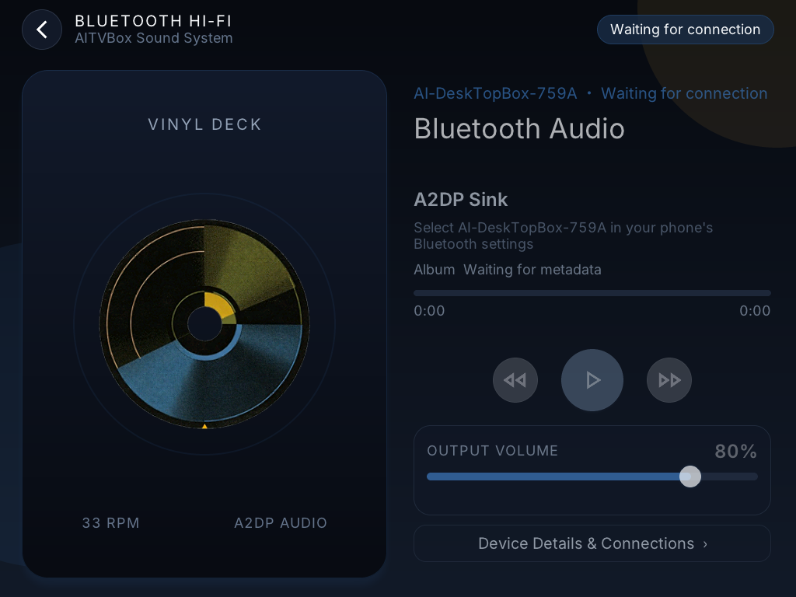
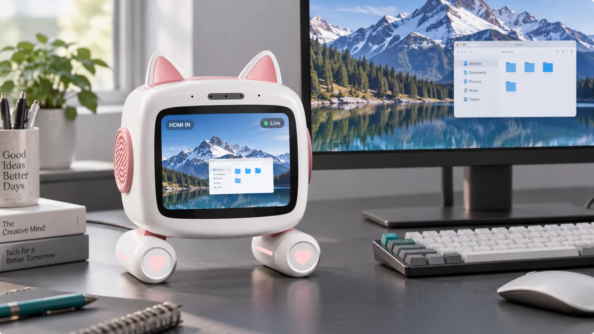
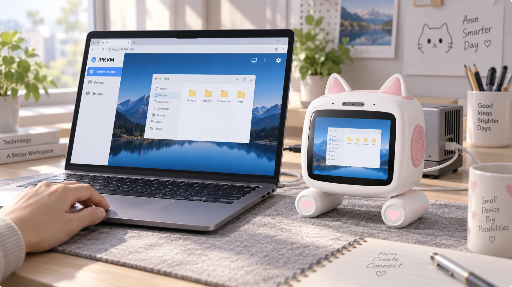
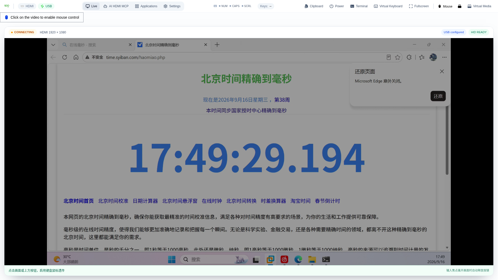
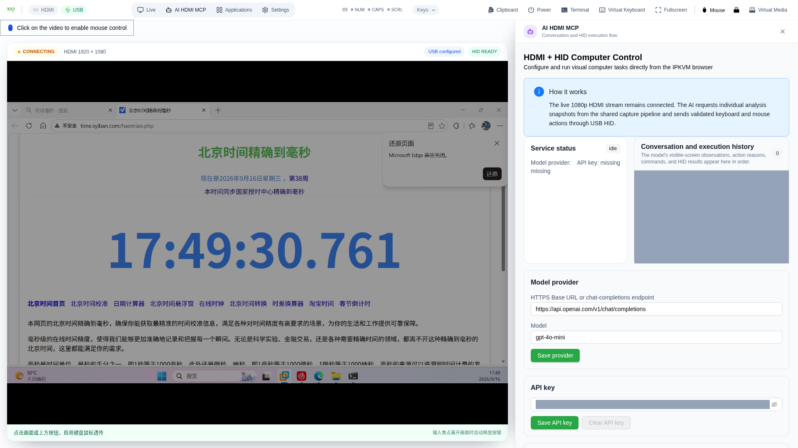
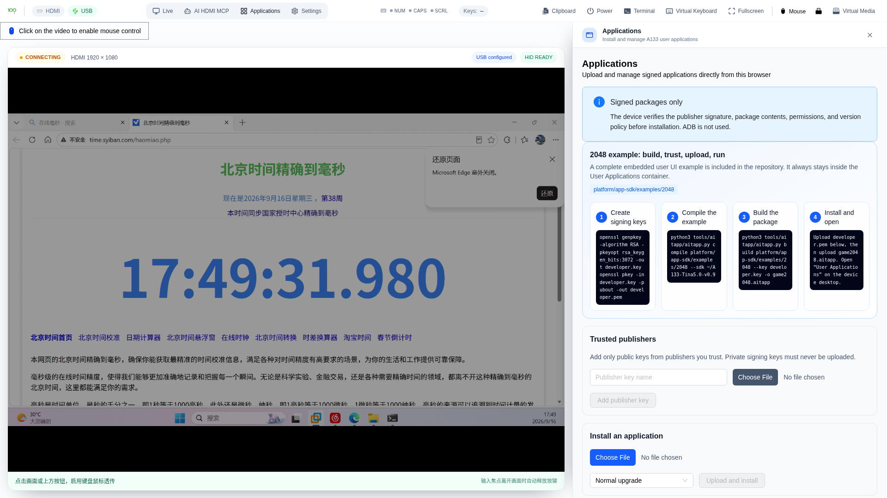
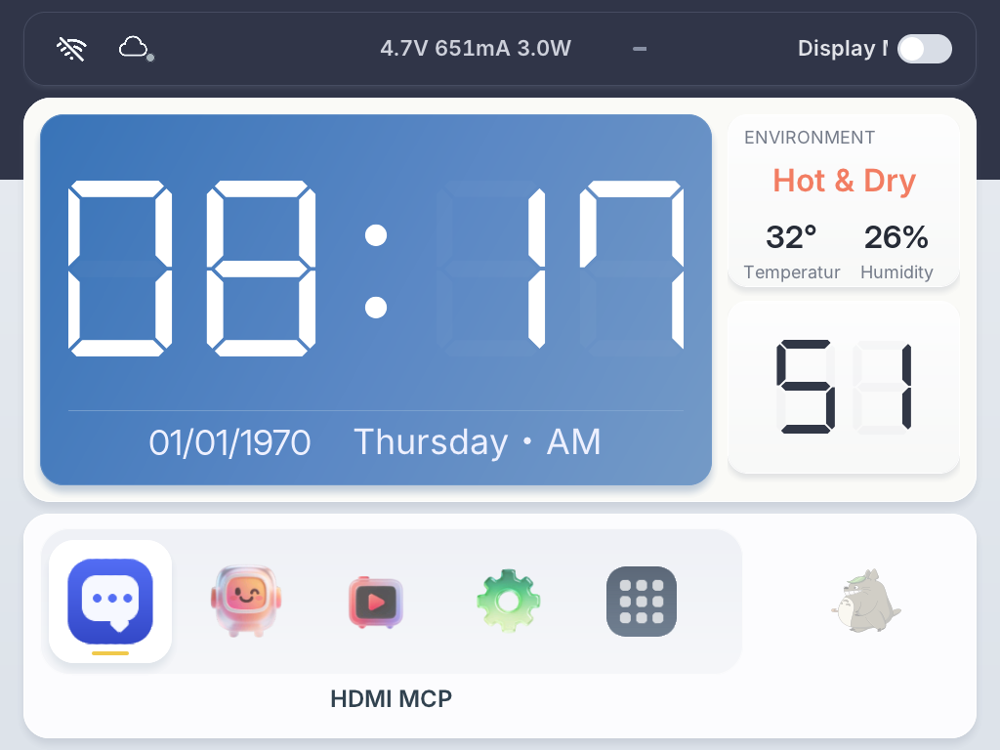
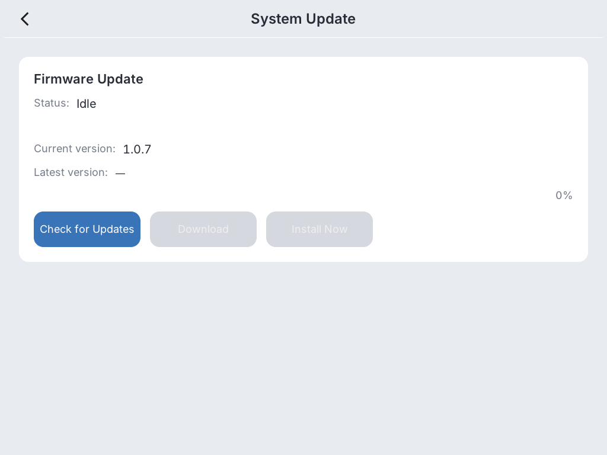

从已运行的桌面、音视频、AI 与设备服务出发，减少重复搭底座。
平台价值
不是又一个 AI Demo，
而是一套设备方案
触摸、语音、浏览器和外部智能体共享一致的设备能力与状态。
电脑画面、键鼠执行和应用权限经过策略层，不把风险直接暴露给模型。
设备身份、签名应用、A/B 升级、回滚和诊断进入同一生命周期。
桌面智能体验
不只会聊天，它也是家庭中控、应用终端和蓝牙音箱
产品体验以涂鸦 AI 为对话入口，以屏幕承载状态与应用，并通过 IoT、蓝牙和签名应用扩展到家庭与日常使用场景。
A133 实机Tuya AI
涂鸦对话与聊天助手
支持“你好涂鸦”离线唤醒、英文识别与回复、流式文字和语音输出，并通过 AEC 抑制自激、支持外部人声打断。
涂鸦 Assistant角色与音色对话状态情绪表情
自由对话
从助手页进入全屏 Free Chat，连续聆听和回复；双击屏幕即可退出，不改变设备保存的默认对话模式。

方案能力Tuya AI + IoT
智能家庭中控
连接涂鸦智能或品牌 OEM App，通过 MQTT 在线状态和 DP 数据点同步，把语音、屏幕面板与家庭设备场景连接起来。
手机端涂鸦智能 / OEM App
云端Tuya AI + IoT
桌面端Smart Desktop Mimi
照明插座环境安防
具体可控设备品类、PID、DP 和自动化场景按客户项目配置并验收。
A133 实机品牌应用生态
自定义应用商店
品牌方可发布声明式或 Native-RPC C 应用。设备在安装前校验发布者、公钥签名、权限、版本和包内容，再把应用放入用户应用中心。
签名验签权限清单浏览器安装隔离存储

A133 实机Bluetooth Audio
蓝牙音箱
手机可把设备作为 A2DP Sink 播放音乐，并通过 AVRCP 传递播放控制与媒体状态；设备端提供连接状态、音量与曲目界面。
A2DP SinkAVRCPPCM 播放断线恢复

端到端方案蓝图
把感知、决策、执行与运维放进同一条可信链路
上层入口不直接占用硬件。平台通过策略、事件和稳定接口协调采集、输入与系统资源，最终连接设备能力和量产服务。
用户与智能体入口
本机触摸 · 语音 · LVGL
远程Web · IPKVM
开发CLI · MCP Host
AI-DESKTOPBOX PLATFORM
嵌入式 AI 设备平台
A133 参考实现
AI 桌面与设备交互
LVGL 桌面、涂鸦对话、家庭中控、蓝牙音频、AEC 与灯效反馈。
电脑视觉与安全控制
HDMI 采集、H.264 / WebRTC、USB HID 与受控视觉任务。
签名应用与 MCP 扩展
应用签名、权限代理、隔离存储与本地或远程工具接入。
身份、升级与量产运维
逐台身份注入、A/B OTA、回滚、持久数据与恢复工件。
面向产品与业务的输出
设备产品品牌化桌面与 AI 体验
电脑控制浏览器级 HDMI / HID 协作
应用生态签名 APP 与 MCP 工具
持续运营身份、升级、诊断与恢复
安全执行原则
采集单所有者、输入独占、HID 自动释放、能力白名单、步骤上限与紧急停止共同约束自动化任务。
四大能力域
从交互体验到底层运维，能力不是孤立插件
每个能力域都通过统一策略和设备接口与其他模块协作，适合品牌化、行业化和后续平台迁移。
AI 桌面与自然交互
面向桌面终端的本地体验层，覆盖涂鸦对话、家庭中控、蓝牙音频、触摸与状态呈现。
- LVGL 桌面与品牌主题
- 涂鸦聊天助手、自由对话与情绪
- Tuya AI + IoT 与 DP 数据点
- A2DP 蓝牙音箱与 AVRCP
- Wi-Fi、设备绑定与 WS2812 状态灯
HDMI / IPKVM 与电脑控制
不要求目标电脑安装客户端，通过视频采集和 USB HID 建立可审计的控制通道。
- HDMI 输入与硬件 H.264
- 浏览器 WebRTC 低时延预览
- 键盘、鼠标与组合键注入
- 视觉任务白名单与紧急停止
签名应用与 MCP 生态
把业务能力装进可验证、可授权、可隔离的扩展机制，而不是开放任意 Linux 程序。
- 声明式或 Native-RPC C 应用
- RSA 签名与浏览器安装
- Manifest 权限与隔离存储
- 本地、ADB、SSH stdio MCP
设备身份与可恢复更新
从通用固件到逐台设备交付，覆盖凭据、升级、回滚和故障恢复。
- 敏感凭据不进入通用固件
- 逐台设备身份与工厂注入
- SWUpdate 与 A/B 系统更新
- 持久分区、回滚与恢复工件
Smart Desktop Mimi 产品场景
同一台设备，连接对话、屏幕与电脑操作
三张场景图分别对应语音陪伴、HDMI 屏幕预览和浏览器 IPKVM 协作，展示平台能力如何组合成完整产品体验。

自然语音 AI桌面陪伴与免手交互
语音唤醒、连续对话、AEC 与状态反馈共同形成设备端交互闭环。

HDMI 视觉输入看见并理解电脑屏幕
通过 HDMI 采集和本机预览，把外部电脑画面接入视觉任务链路。

浏览器 IPKVM画面、键盘与鼠标协作
无需在目标电脑安装客户端，即可通过浏览器完成受控查看与操作。
真实实现证据
不是概念清单，关键链路已有 A133 实机界面
以下画面来自当前仓库的自动化 UI 取证。它们用于证明浏览器 IPKVM、AI HDMI MCP 与签名应用管理已经形成可操作界面。



设备端 UI
从桌面入口到应用与系统更新
以下四张均为 A133 framebuffer 真实取证截图，保持源文件原始 4:3 比例。


开发者接入路径
按你的产品角色进入，不必理解整套系统后再开始
设备应用
构建设备端 APP
适合把行业业务、品牌服务或离线工具直接带进设备桌面。
- 选择声明式或 Native-RPC C 模式
- 声明权限、配置隔离存储
- 签名、构建并通过浏览器安装
docs/user-app-development-guide.md
智能体工具
连接 MCP Host
适合让外部智能体通过稳定工具协议调用设备能力和业务工具。
- 选择本地、ADB 或 SSH stdio
- 按能力白名单开放工具
- 把高风险执行留在策略层
docs/mcp-user-guide.md
电脑协作
集成浏览器 IPKVM
适合远程运维、实验设备、桌面助理或无人值守电脑控制场景。
- 接入 HDMI 与 USB Gadget
- 配置 WebRTC 和网络路径
- 验证时延、映射与断连释放
docs/ipkvm-user-guide.md
平台架构
上层稳定、下层可换，适配工作停留在明确边界内
业务不应直接绑定驱动或某一块芯片。AI-DeskTopBox 用稳定端口和 Provider 层隔离硬件、第三方服务与产品逻辑。
交互入口
LVGL UIWebCLI
应用编排
Use CasesCommand RoutingApp Runtime
领域治理
Domain PolicyTyped EventsResource Arbitration
稳定接口
Stable PortsIPC V2V1 Compatibility
实现与服务
A133 ProviderTuyaWebRTCMCPSWUpdateCloud
交付状态与项目边界
明确区分“已经实现”与“需要适配”
方案以 A133 作为参考实现。其他 SoC 展示的是可迁移接口，不等同于已经完成的产品交付。
A133 参考实现
核心平台、桌面、应用机制、IPKVM 服务和升级链路已在当前仓库形成实现与验证资产。
- 可重复构建与自动化回归
- 真实 A133 交叉编译
- 安全默认值与权限边界
- 可回滚、可恢复的发布设计
A527 / V883 / RK3576 / RV1106
架构预留 Provider 和稳定端口，具体芯片仍需完成驱动、媒体链路、性能和板级工程验证。
- 不是当前现成交付物
- 不预设相同的视频与 AI 性能
- 按目标硬件重新完成验证矩阵
量产前必须在目标硬件和目标网络验证
HDMI 电气与兼容性
USB 枚举与 HID 行为
声学、AEC 与麦克风布局
触摸与显示品质
NAT / 弱网与远程访问
温升、功耗与认证